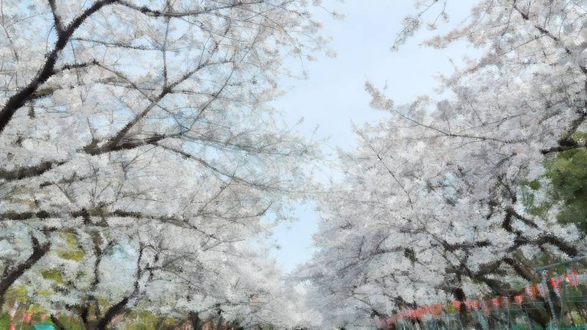
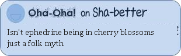

Script 00001073

「――と言うわけで、この公園では今夜、大物ミュージシャンたちによるスペシャルライブが行われます！」
――だったら今夜はもう超満員でしょうね！
「そうですね！ 昨日から場所取りをしようと並んでいる方々もたくさんいらっしゃいます！
ライブ主催者側も急きょ整理券を配布しているとのことです！
こちらからは以上でーす！」
――ありがとう、ゆきちゃーん！

――はい、それでは7時になりました。
水曜のこの時間は『ゴマコメマメ知識』です！
さあ、今日のテーマは？
――桜です！
ゆきちゃんが実況してくれましたように今日本は桜満開の季節です。
今日は桜に詳しい日本園芸大学名誉教授の秋野冬夫先生にきていただきました。
どうぞ、よろしくお願いします。
「はいはいどうもね、よろしくね、秋野と言いますね、よろしくね」
「はいはいどうもね、よろしくね、秋野と言いますね、よろしくね」
――さあ先生、今日は桜にまつわるちょっと変わったお話をしてくださるとのことですが？
「そうそれね、それなんだけどね、あのね、この季節になるとみんな開放的になるでしょ？ だからね、この季節になると変な人が増えるでしょ？
「そうそれね、それなんだけどね、あのね、この季節になるとみんな開放的になるでしょ？ だからね、この季節になると変な人が増えるでしょ？
だからねそれでね、どうしてそんな人が増えるのかお話ししようと思ってね、色々考えてきたのね」
――ほうほう、やっぱりこの時期になるといわゆる変質者が現れるのにも理由があるんですか？
「そうそうね、あのね、桜にはね、メタンフェタミンって言う覚せい剤の前駆物質になる薬物が含まれていてね、それでね、その物質ってエフェドリンっていうのね、
だからね、それを吸い込むとみんな陽気になっちゃってね、お花見で脱いだりね、男女がいい感じになって始めちゃったりね、色々起こるのね」
――あ、あの先生、すみませんが朝の番組ですので……。

「それでね、桜ってね、全部クローンなの、全部同じなの」
――桜がクローンってどういうことですか？
――桜がクローンってどういうことですか？
「桜のソメイヨシノって言うのはね、元々1つの木なんだけど、
それを挿し木したり接ぎ木したりするから、全部同じ木なの。
だからね、ソメイヨシノって言うのはね、品種って言うよりも、1本の桜の木につけられた名前みたいなものなの」
――じゃあソメイヨシノって言うのは、元は全部、全く同じ木ってことですか？
「あれはね、ソメイヨシノだけだとね、種子ができないの。だからね、ソメイヨシノと別の品種の桜じゃないと種ができないのね。 それはもうね、
「あれはね、ソメイヨシノだけだとね、種子ができないの。だからね、ソメイヨシノと別の品種の桜じゃないと種ができないのね。 それはもうね、
ソメイヨシノとは別物なの。
自家不和合性って言うんだけどね、ソメイヨシノは自然では絶対に繁殖できない品種の桜なの」
「だからね、ソメイヨシノって言うのはね、別の品種を利用しないと自然には増えないの。こう言うと寄生生物みたいだけどね、ソメイヨシノはね、自然の状態だと他の生物を使って繁殖するの。
だからね、ソメイヨシノも変質者みたいなもんでね、
別の生き物で繁殖したかと思うとね、これまた別の生き物で繁殖しちゃうのね。
でもね、それはもうソメイヨシノじゃなくて別の品種なのね。
ほんと、浮気者だよね。
はーっはっはっはっは！」
「だからね、桜って言うのはね、覚せい剤をばらまいたりね、他の生物を使用して繁殖するようなね、
そんな植物だからね、それを愛でる人たちも大概変だと思うのね。はーっはっはっは！」
――あ、あ…… 先生、どうもありがとうございました。 それでは、CMの後はニュースです。
――あ、あ…… 先生、どうもありがとうございました。 それでは、CMの後はニュースです。